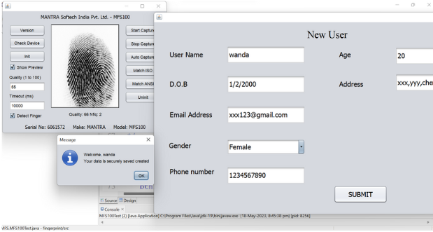

Projects

Finger-Print Project
This is an Attendance Monitoring project built using Java Swing,
on reading the fingerprint the device will be able to dislay the details of the user which is
saved in mysql workbench. When the fingerprint is not recignized it asks the user to enter the details.

Multi-Page Portfolio Web-page
This is a Multi-Page portfolio page that was made using Angular Framework,
this page had the front-end, back-end skills and it was a basic website that was made
using CSS and HTML.